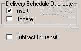

|
Test scenario 10 refers to line 1 of your customer order. |
Settings:
VMDI Generate |
|
Header tab  |
Sub Line tab
|
VMDI Exchange |
|
|
|
Input File:
The imported CPO file: the input data imported by VMDI Exchange into Customer Order Entry.
LIN,CUMMTEST,RAW_MATERIAL_1,1,20051205000000,1234,ONE,MMC-MAIN,20051205000000,315000000 SUB,CUMMTEST,20051205000000,315000000,ONE,A SUB,CUMMTEST,20051212000000,330000000,ONE,F SUB,CUMMTEST,20051219000000,333000000,ONE,F SUB,CUMMTEST,20051226000000,348000000,ONE,P SUB,CUMMTEST,20060102000000,363000000,ONE,P SUB,CUMMTEST,20060109000000,378000000,ONE,P SUB,CUMMTEST,20060116000000,393000000,ONE,P |
Import Results:
RESULTS after import Customer Order CUMMTEST with VMDI Exchange:
Total Req to be shipped: 39300 (VDI file) Less 31500 (Their EDI Cumm) =7800 |
Intransit
Qty = 33000 (Our Total Shipments) Less 31500 (Their EDI Cumm) |
7800 - 1500 (Intransit to add back) = 6300 (required qty to be shipped) |
Delete Unshipped Schedules - Not Applicable |
Delivery Schedule duplicate Inserted for: 12/19 |
Update of Delivery Schedule lines - Not Applicable |
DS line 11/14/05 for 1500 was over shipped by 300 and Close Partial Shipped changed the qty to 1800; DS line 11/21/05 for 1500 was under shipped by 500 and Close Partial Shipped changed the qty to 1000. Subtract Intransit - Not Applicable |
Required Qty Inserted or Updated: Concerning other delivery schedules: 39300-37800 (DS 1/16 for 1500 already exists), 5800-1500=4300 (req qty to ship), 37800-36300 (DS 1/9 for 1500 already exists), 36300-34800 (DS 1/2 for 1500 already exists), 34800-33300 (DS 12/26 for 1500 already exists). 12/19 DS that was to be created for 1500 is actually created for 1800, since 300 is left to create (7800-7500). |
For more information on which schedules VISUAL inserted, updated, and deleted, use a text viewer to look at the CPO####G.log file located in the directory where your executables are installed.